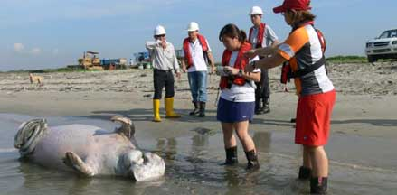
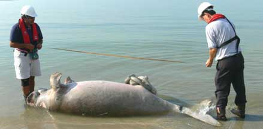
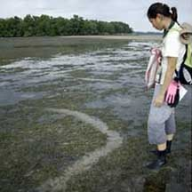
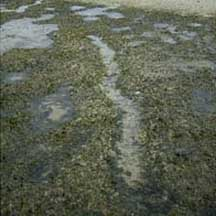
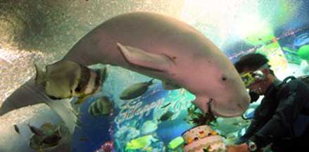

|
|
| vertebrates text index | photo index |
| Phylum Chordata > Subphylum Vertebrata > Class Mammalia |
| Dugong Dugong dugon Family Dugongidae updated Jan 2021 Where seen? Dugongs used to be common in the Johor Straits but were considered locally extinct by the 1980's. While in the late 1990's, there were increased encounters with dugongs in the Johor Straits, there were fewer sightings in the 2000's. According to Davison, they are recorded mainly from the north-eastern Johor Straits around the Sungai Johor estuary. Strandings have occured on Pulau Ubin, Pulau Tekong, Changi and East Coast Park. Individuals have been sighted off Changi, around Pulau Ubin, Pulau Tekong and Labrador. Dugongs need to eat lots of seagrass so they keep moving and are usually not permanently resident in one small location. Dugongs can travel several hundred kilometers in a few days as they feed from place to place. Our seagrass meadows are probably only one stop among many for dugongs that live in the area. |
 Dead dugong washed up on Pulau Tekong, Jun 06  Photos from Raffles Museum news. |
 Dugong feeding trail. Chek Jawa, Jan 07  |
| Features: Adults 2.4-2.7m long and weighing 230-360kgs.
It is an air-breathing mammal that is well adapted to its underwater
lifestyle and seagrass diet. A
dugong's mouth faces downwards to munch on seagrass and it has large,
grinding teeth that grow continuously. Its digestive system is also
adapted for tackling seagrass. Its front limbs are modified into flippers,
used for steering when swimming, or for 'walking' as it floats over
the ground when feeding. A dugong has no hind limbs but has a powerful
tail fluke to swim with. Its grey, smooth skin is thick and sparsely
covered with hair. A dugong has lots of stored fat (blubber) which
provides bouyancy. The dugong is the only herbivorous mammal that
is strictly marine. Sometimes confused with the manatee. The natural range of the manatee is in the tropical coasts of the Americas and Western Africa. While the dugong's natural range is from Eastern Africa, the Red Sea, through India and Southeast Asia to Australia. While the manatee has a circular tail fluke, dugongs have a forked tail fluke. |
 Gracie the captive dugong at Underwater World Sentosa on her 12th birthday Jan 09, from Channel NewsAsia. |
||
| What does it eat? Seagrass is the dugong's main food. So
not surprisingly, it is also sometimes called the Sea Cow! It pulls
out a mouthful of seagrasses with its thick lips, shakes it to get
rid of the sand and then swallows. Dugong feeding trails are formed when dugongs chomp up seagrasses including their roots, leaving a shallow meandering furrow of about equal width and depth. A dugong often 'cultivates' a favourite
patch of seagrass by cropping it frequently. This promotes faster
growth of young tender leaves which the dugong prefers to eat. The dugong
one of the few large animals that can digest fresh seagrass. According to Davison, apparently it feeds during the night and rests
in deeper waters during the day. Dugong babies: The mother dugong gives birth in shallow waters, usually to a single calf. The calf clings to the mother's back as she grazes. She suckles her baby for up to 18 months. The juvenile might stay with her for another year after that. It is almost impossible for the baby to survive if its mother dies. Dugongs reproduce slowly, taking 9-10 years to reach sexual maturity and give birth only every 3-7 years. They can live up to 70 years. Status and threats: The Dugong is listed as 'Critically Endangered' in the Red List of threatened animals of Singapore. The dugong's natural predators are sharks, killer whales and crocodiles. But man is the main threat, hunting dugongs for their meat, oil, skin (for leather) and for medicinal uses. Dugongs also drown when trapped in fishing nets and are injured by boat propellers. Mostly, they are threatened by the loss of seagrass habitats. Dugongs used to form herds of hundreds, now groups of six are the average. The effective conservation of dugongs requires international cooperation as their natural range can cover many countries. Dugongs are considered highly endangered globally; listed on CITES I and considered by the IUCN to be vulnerable to extinction. |
| Dugong feeding trails on Singapore shores |
On wildsingapore
flickr
|